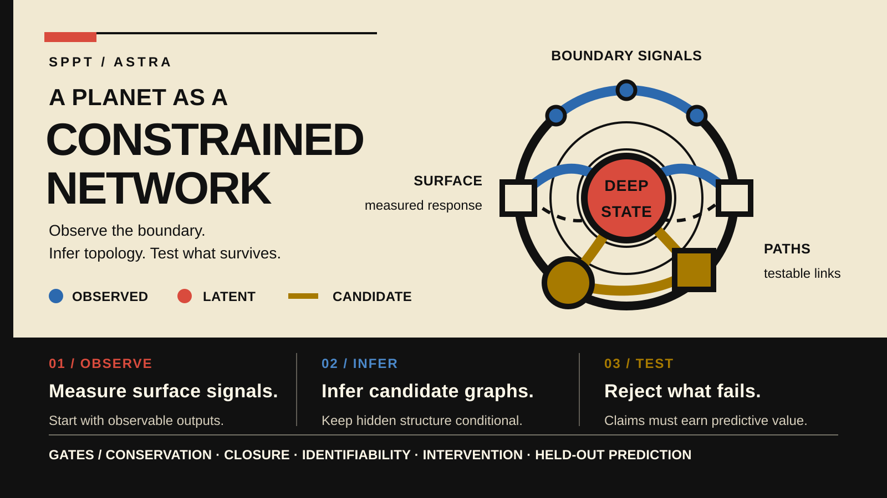

A stable SPPT/ASTRA core reference edition, an immutable historical baseline, and independently versioned supplemental working papers. Repository-visible research drafts remain separate from all release identities.
Current reference framework — v1.0.7

Reading order: observe boundary signals and measured responses, infer a conditional latent state, then test candidate graphs against declared gates. Open the full-size vector. This is not an observational image, scale model, or claim of planetary validation.
This is a not-peer-reviewed perspective and mathematical framework with reduced synthetic demonstrations, not empirical planetary validation. Use the convenience current-core redirect, browse the reference-editions index, or download the exact assets and checksums from the immutable v1.0.7 release.
Current supplemental framework — v0.3.0 (working-paper edition)
ASTRA Framework v0.3.0 · 6 August 2026 · 171 pages
Foundational working paper · evidence graded · not peer reviewed
Earth Is the Instrument
A separately versioned Earth-systems and mathematical framework about dual-rent seams, local-to-global certificates, geological memory, evidence independence, and bounded arithmetic-seam tests.
Version boundary: v0.3.0 supersedes an internal v0.2.1 predecessor preserved in its archive; no public v0.2.1 tag or GitHub Release was created. It does not amend or supersede stable SPPT/ASTRA v1.0.7, enter its claim-admission matrix, inherit its verification, or provide empirical validation; v1.0.6 remains the immutable historical baseline.
The earlier Working Paper 0.1 remains available as a stable historical edition.
Superseded public package — v1.0.7 Candidate Revision 2
This immutable prerelease records the review snapshot that preceded the stable v1.0.7 integration. Its PDF, DOCX, source, figures, ledgers, and checksums remain available through the GitHub prerelease; the later stable release has its own source tree, assets, manifest, and identity. It has no separate Pages edition, DOI, or Zenodo record.
The published HTML editions are the primary reading path: they reflow at narrow widths and retain document landmarks, headings, links, tables, image alternatives, and MathML. PDF and source artifacts remain separately downloadable for fixed-layout reading and exact reproduction; unpromoted drafts are read from their repository paths.